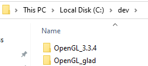
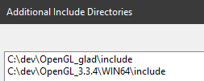
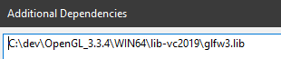
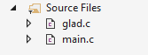
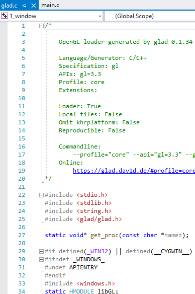
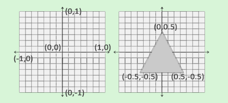
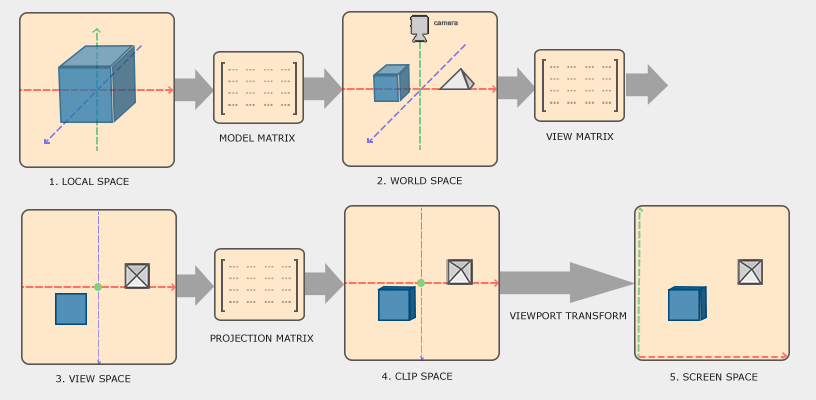

# OpenGL - Learning the engine
## About
https://learnopengl.com/Getting-started/OpenGLOpenGL is a graphics specification (not an API) maintained by Kronos Group.
The specification defines what the result/output should be of each function.
The 3.3 specification can be found here:
https://www.khronos.org/registry/OpenGL/specs/gl/glspec33.core.pdfDevelopers then implement the specification into OpenGL libraries.
OpenGL library developers are often graphics card manufacturers.
e.g. Apple's OpenGL library, Linux has multiple (hobbyist and manufacturer's libraries)
Modern OpenGL is considered as version 3.3 and higher.
Old OpenGL was immediate mode - this abstracted away complex stuff and was easy to use.
Modern OpenGL is "core-profile" mode - an OpenGL specification that removes old functionality and gives more flexibility. It's harder.
### State / Context
OpenGL by itself is a large state (also known as context).
The context holds a bunch of variables that define how OpenGL operates.
You change OpenGL's state by modifying the variables, updating the buffers, and then re-render the context.
There are OpenGL functions that change state,
and ones that use the state.
### Objects
OpenGL libraries are written in C.
C language constructs don't translate well to high-level languges.
As a result, OpenGL has created objects (basically structs full of options).
An object is a collection of options that represent a subset of OpenGL's state.
e.g.
struct object_name {
float option1;
int option2;
char[] name;
};
// Create object
unsigned int objectId = 0;
glGenObject(1, &objectId);
// Bind/assign object to context
glBindObject(GL_WINDOW_TARGET, objectId);
// Set options of object currently bound to GL_WINDOW_TARGET
glSetObjectOption(GL_WINDOW_TARGET, GL_OPTION_WINDOW_WIDTH, 800);
glSetObjectOption(GL_WINDOW_TARGET, GL_OPTION_WINDOW_HEIGHT, 600);
// Set context target back to default
glBindObject(GL_WINDOW_TARGET, 0);
## Set up
### Window & Context Libraries
To draw OpenGL graphics you need an OpenGL context and a window to draw them in.
Getting a window and a context is OS-specific.
There are libraries which will do this for you:
• GLUT
• SDL
• SFML
• GLFW (used here)
◇ Get the Windows pre-compiled libraries here -
https://www.glfw.org/download.html### GLAD - Grab OpenGL functions @ runtime
There are multiple different implementations of OpenGL.
The different implementations are all different libraries.
As a reuslt, the location of the OpenGL functions within these libraries will differ depening on the library.
Therefore, you'd have to find the location of the OpenGL functions you want in the library at runtime.
This is a pain.
Instead, there's libraries which will grab find functions at runtime for you.
e.g. GLAD
1. Go to GLAD -
https://glad.dav1d.de/2. Pick
Version 3.3, Profile >
Core and tick
Generate a loader3. Press Generate
4. Copy the includes to your code directory
5. Include the library files with #include
<glad/glad.h>### Visual Studio Compiler settings
You gotta include all the libraries and headers.
Make sure to set your compile arhcitecture to whatever GLFW library you downloaded (x86 or x64)
My GLFW and GLAD headers/libraries are stored in
C:\devAdd the headers/includes
C/++ > Additional Inlcude DirectoriesAdd both GLFW and GLAD
Add additional depencies (the libraries)
Linker > Input > Additional DependenciesCopy
glad.c into your code directory
Make sure you include GLAD before GLFW (because there's defines in GLAD that clash)
#include <glad/glad.h>
#include <GLFW/glfw3.h>
int main()
{
glfwInit();
glfwWindowHint(GLFW_CONTEXT_VERSION_MAJOR, 3);
glfwWindowHint(GLFW_CONTEXT_VERSION_MINOR, 3);
glfwWindowHint(GLFW_OPENGL_PROFILE, GLFW_OPENGL_CORE_PROFILE);
return 0;
}
Test compile. Everything should work.
## Create a Window
https://learnopengl.com/Getting-started/Hello-WindowHere you can learn mostly about rendering:
•
glClearColor changes the colour in the new state.
•
glClear clears the existing state and replaces it with the new state.
•
SwapBuffers swaps to the newly rendered frame (state) and shows the output to the screen.
#include <Windows.h>
#include <glad/glad.h>
#include <GLFW/glfw3.h>
// Handle resizing of the window.
void FramebufferSizeCallback(GLFWwindow* window, int width, int height)
{
// Tell OpenGL the size of the rendering window
glViewport(0, 0, width, height);
return;
}
// Process keyboard inputs
void ProcessInput(GLFWwindow* window)
{
if (glfwGetKey(window, GLFW_KEY_ESCAPE) == GLFW_PRESS)
glfwSetWindowShouldClose(window, TRUE);
return;
}
int main()
{
// Initialise context
glfwInit();
glfwWindowHint(GLFW_CONTEXT_VERSION_MAJOR, 3);
glfwWindowHint(GLFW_CONTEXT_VERSION_MINOR, 3);
glfwWindowHint(GLFW_OPENGL_PROFILE, GLFW_OPENGL_CORE_PROFILE); // Use the core profile
// Create window object (holds all windowing data)
GLFWwindow* window = glfwCreateWindow(800, 600, "Learn OpenGL", NULL, NULL);
// Make our window context the main context on the thread
glfwMakeContextCurrent(window);
// Register callback to handle a user resizing the window
glfwSetFramebufferSizeCallback(window, FramebufferSizeCallback);
// Load all OpenGL function pointers from GLAD
gladLoadGLLoader((GLADloadproc)glfwGetProcAddress);
/*
Create a render loop so that we keep drawing images.
(not render 1 image and then exit).
An iteration of a render loop is called a frame.
glfwWindowShouldClose checks if GLFW has been instructed to close.
*/
while (!glfwWindowShouldClose(window))
{
// Handle user inputs
ProcessInput(window);
// RENDERING COMMANDS GO HERE
// Clear screen so we don't see renders from the previous frame
glClearColor(0.2f, 0.3f, 0.3f, 1.0f); // (state-setting) Sets the state to new colour
glClear(GL_COLOR_BUFFER_BIT); // (state-using) Uses the state to retrieve the new colour and clear the colour buffer bits from the previous frame
// End of render loop
glfwPollEvents(); // Check for events (keyboard press, mouse click, etc.) and call them
glfwSwapBuffers(window); // Swap to new frame and show output to screen
}
// Clean up GLFW's resources and exit
glfwTerminate();
return 0;
}
## Graphics Pipeline
In OpenGL, everything is in 3d space.
But your monitor is 2D.
OpenGL's graphics pipeline converts the 3D space into 2D elements to draw on your screen.
The pipeline takes as input a set of 3d coordinates.
It will then transform that 3d object into a 2d element on your screen.
Shaders are small programs which process the data in the graphics pipeline.
They run on the GPU.
You can write your own shaders (OpenGL Shading Language) or use the default ones.
A vertex is a collection of data per 3d coordinate (e.g. the 3d coordinates and a colour value)
Vertex data is represented using vertex attributes.
The pipeline can be divided into several steps.
Part 1 - Vertex ShaderTransforms 3d coordinates into different (?) 3d coordinates.
Part 2 - Primitive AssemblyTakes all the vertices (the vertexes) that form a primitive and assembles them into a shape.
e.g. a triangle
Part 3 - Geometry ShaderTakes the shape from the primitive assembly stage
and generates other shapes by emitting new verticies (which then form new primites)
e.g. you make a 2nd triangle
Part 4 - Rastersization StageMaps the primitives to corresponding pixels on the final screen.
Part 5 - ClippingDiscards all fragments that are outside your view, increasing performance.
Part 6 - Fragment ShaderContains data about the 3d scene (lights, shadows, colour of the light, etc.)
and uses that to calculate the final colour of a pixel on the screen.
Part 7 - Alpha Test and Blending StageChecks the depth of the fragment to see it's behind another object (it discards the pixel if it is)
Then checks the opacity of the object and blends accordingly
In most cases you only have to wortk with parts 1 and 6 - the vertex and fragment shader.In modern OpenGL, you have to define a vertex and fragment shader of your own (no default ones).
### Vertex Input
OpenGL only processes 3D coordinates when they're in a specific range;
between -1.0 and 1.0 on all 3 axes (x, y and z).
Coordinates within this range are called normalised device coordinates - and they'll appear on your screen.
Here's a triangle.
There's 3 coordinates each with depth (z) of 0 (which means it's drawn 2d)
float vertices[] = {
-0.5f, -0.5f, 0.0f,
0.5f, -0.5f, 0.0f,
0.0f, 0.5f, 0.0f
};
Here's how it plots.
### Vertbox Buffer Objects
Vertex Buffer Objects (VBO) store large numbers of vertices in the GPU's memory.
Using VBOs, you can send big batches of data to the GPU all at once instead of sending vertexes 1 by 1.
With the vertex in GPU memory, the GPU can access the vertex super speedily.
You can generate a vertex buffer with
glGenBuffersThere are lot of types of buffer objects. You can bind a buffer to a buffer object with
glBindBufferLastly, you copy the vertex data into the buffer's memory with
glBufferData### Vertex Shader
In modern OpenGL you have to write your own vertex shader.
Shaders are written in GLSL - OpenGL Shading Language (it's similar to C)
When writing your own, you'll have to translate the input data to normalised device coordinates
to check if the object is within OpenGL's visible region.
Example barebones vertex shader
// Fragment shader in GLSL language:
#version 330 core
layout (location = 0) in vec3 aPos;
void main()
{
gl_Position = vec4(aPos.x, aPos.y, aPos.z, 1.0);
}
// Fragment shader in C source:
const char* vertex_shader_src = "#version 330 core\n"
"layout (location = 0) in vec3 aPos;\n"
"void main()\n"
"{\n"
" gl_Position = vec4(aPos.x, aPos.y, aPos.z, 1.0);\n"
"}\0";
### Fragment Shader
The fragment shader calculates the colour output of your pixels.
It has only 1 output variable, a vector of 4 values that defines the final colour output.
This basic fragment shader outputs and orange colour.
// Fragment shader in GLSL language:
#version 330 core
out vec4 FragColor;
void main()
{
FragColor = vec4(1.0f, 0.5f, 0.2f, 1.0f);
}
// Fragment shader in C source:
const char* fragment_shader_src = "#version 330 core\n"
"out vec4 FragColor;\n"
"void main()\n"
"{\n"
" FragColor = vec4(1.0f, 0.5f, 0.2f, 1.0f);\n"
"}\n\0";
### Compile, Attach, and Link Shaders to Shader Program
Compile the shader
unsigned int vertex_shader = glCreateShader(GL_VERTEX_SHADER);
glShaderSource(vertex_shader, 1, &vertex_shader_src, NULL);
glCompileShader(vertex_shader);
Attach and Link Shaders to Shader Program
unsigned int shader_program = glCreateProgram(); // Create a program object
glAttachShader(shader_program, vertex_shader); // Attach shader to program
glAttachShader(shader_program, fragment_shader);
glLinkProgram(shader_program);
Active the shader program and then delete the shader objects (don't need them anymore)
glUseProgram(shader_program);
### Drawing Objects
Drawing objects will look something like this:
// 0. Copy our vertices array in a buffer for OpenGL to use
glBindBuffer(GL_ARRAY_BUFFER, VBO);
glBufferData(GL_ARRAY_BUFFER, sizeof(vertices), vertices, GL_STATIC_DRAW);
// 1. Then set the vertex attributes pointers
glVertexAttribPointer(0, 3, GL_FLOAT, GL_FALSE, 3 * sizeof(float), (void*)0);
glEnableVertexAttribArray(0);
// 2. Use our shader program when we want to render an object
glUseProgram(shaderProgram);
// 3. Now draw the object
someOpenGLFunctionThatDrawsOurTriangle();
You couldn't do this for 100s of objects.
Instead, you store all the state configurations in an object and bind the object to restore its state.
You do this with Vertex Array Objects (VAOs).
### Vertex Array Object
A Vertex Array Object (a VAO) stores vertex attributes.
When you want to draw an object with those attributse, you simply bind the corresponding VAO.
Vertex Array Objects store the followign:
• Calls to
glEnableVertexAttribArray• Attribute configurations from
glVertexAttribPointer• Vertex Buffer Objects from
glVertexAttribPointerGenerate a VAO
unsigned int VAO = glGenVertexArrays(1, &VAO);To use a VAO you bind it
glBindVertexArray(VAO);Example source code might be:
// 1. Bind Vertex Array Object
glBindVertexArray(VAO);
// 2. Copy our vertices array in a buffer for OpenGL to use
glBindBuffer(GL_ARRAY_BUFFER, VBO);
glBufferData(GL_ARRAY_BUFFER, sizeof(vertices), vertices, GL_STATIC_DRAW);
// 3. Set our vertex attributes pointers
glVertexAttribPointer(0, 3, GL_FLOAT, GL_FALSE, 3 * sizeof(float), (void*)0);
glEnableVertexAttribArray(0);
// WITHIN RENDER LOOP
// 4. Draw the object
glUseProgram(shaderProgram);
glBindVertexArray(VAO);
someOpenGLFunctionThatDrawsOurTriangle();
In short,
a VAO stores your vertex attribute configration and which Vertex Buffer Object to use.
### Element Buffer Objects
OpenGL draws stuff in triangles.
If you wanted to draw a rectangle, you'd draw 2 triangles.
Here we've specified 6 vectors, but you only need 4 to draw a rectangle.
With 1000s of objects on the screen, this will decrease performance.
float vertices[] = {
// first triangle
0.5f, 0.5f, 0.0f, // top right
0.5f, -0.5f, 0.0f, // bottom right
-0.5f, 0.5f, 0.0f, // top left
// second triangle
0.5f, -0.5f, 0.0f, // bottom right
-0.5f, -0.5f, 0.0f, // bottom left
-0.5f, 0.5f, 0.0f // top left
};
The solution is to use an EBO - Element Buffer Object.
It stores indices that determine what vertices to draw (and in what order) - indexed drawing.
float vertices[] = {
0.5f, 0.5f, 0.0f, // top right
0.5f, -0.5f, 0.0f, // bottom right
-0.5f, -0.5f, 0.0f, // bottom left
-0.5f, 0.5f, 0.0f // top left
};
unsigned int indices[] = { // note that we start from 0!
0, 1, 3, // first triangle
1, 2, 3 // second triangle
};
## Vectors and Matrices
https://learnopengl.com/Getting-started/TransformationsNothing to take note of here, just take the concepts above into your brain.
## Coordinate Systems
https://learnopengl.com/Getting-started/Coordinate-SystemsYou use transformation matrices to transform coordinates from one space to the next.
The order is:
Local coordinates > World coordinates > View coordinates > Clip coordinates > Screen coordinates
Local coordiantes - where your objects begins.
World space coordinates - where your object sits in the larger world (relative to world origin).
View-space coordiantes - where the object is within the camera's view.
Clip coordiantes - determines what part of the object shows on the screen (e.g. top cut off)
Screen coordiantes - translates the 3d coordinates into where the object will sit on your 2d screen
